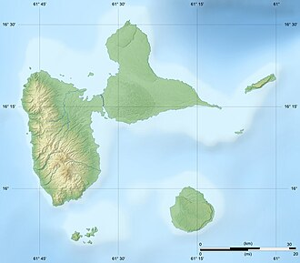
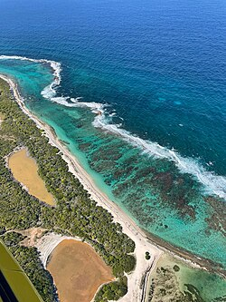
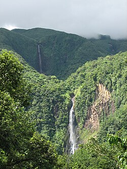

Quelques activités à faire :
- Faire de la randonnée sur le volcan "La Soufrière"
- Plonger dans la réserve Cousteau
- Visiter les Chutes du Carbet
- Nager à la plage "Les Salines" à Saint-François
- Découvrir la faune locale
N'oubliez pas votre appareil photo !

Source
Source
Source SourceCommunes les plus touristiques :
| Le Gosier | Saint-François | Deshaies | Port-Louis |
|---|---|---|---|
| Le Casino | Le Casino | La plage de Grande Anse | La plage du Soufleur |
| Les restaurants | Les plages | Le point de vue Gadet | Les restaurants |
| L'Aquarium | La Pointe des Châteaux | Les restaurants | |
| L'îlet du Gosier | Le Golf |